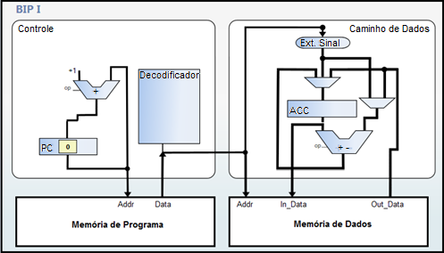

O BIP I possui uma arquitetura embasada na arquitetura RISC (Reduced Instruction-Set Computer) do microcontrolador PIC. Este processador é orientado a acumulador e não possui banco de registradores como o processador MIPS (Microprocessor without Interlocked Pipeline Stages). Todas as operações realizadas no BIP I se utilizam do acumulador, pois ele apresenta apenas um registrador para realizar o armazenamento de dados, com tudo, algumas operações aritméticas necessitam utilizar operandos posicionados em memória. (MORANDI et al. 2006).
A arquitetura do BIP I possui poucos modos de endereçamento, sendo que todas as instruções possuem o mesmo formato. O formato de instrução é composto por um código de operação com o tamanho de 5 bits e um operando no tamanho de 11 bits, totalizando 16 bits de instrução. (MORANDI; RAABE; ZEFERINO, 2006).
| Arquitetura BIP I. | |
|---|---|
| Tamanho da palavra de dados | 16 bits |
| Tipo de dados | Inteiro de 16 bits com sinal: -32768 a +32767 |
| Tamanho da palavra de instrução | 16 bits |
| Registradores |
ACC: Acumulador IR: Registrador de Instrução PC: Contador de Programa |
| Classes de instrução |
Acesso a Memória: STO, LD, LDI Aritmética: ADD, ADDI, SUB, SUBI Controle: HLT |
Fonte: Adaptado de Morandi (et al., 2006).
Os registradores que compõe a arquitetura do BIP I são os registradores (i) PC (Program Counter) que aponta para a próxima instrução a ser executada; (ii) IR (Instruction Register) que armazena a instrução em execução; e o (iii) ACC (Accumulator) que é utilizado para armazenar dados durante a execução de uma operação aritmética ou de atribuição. (MORANDI; RAABE; ZEFERINO, 2006).
O conjunto de instruções do BIP I é composto por oito instruções sendo uma instrução de controle, três instruções de transferência e quatro instruções de aritmética. Este conjunto de instruções pode ser observado abaixo.
| Código da operação | Instrução | Operação | Classe |
|---|---|---|---|
| 00000 | HLT | Paralisa a execução | Controle |
| 00001 | STO | (endereço) ← ACC | Transferência |
| 00010 | LD | ACC ← (endereço) | Transferência |
| 00011 | LDI | ACC ← constante | Transferência |
| 00100 | ADD | ACC ← ACC + (endereço) | Aritmética |
| 00101 | ADDI | ACC ← ACC + constante | Aritmética |
| 00110 | SUB | ACC ← ACC - (endereço) | Aritmética |
| 00111 | SUBI | ACC ← ACC - constante | Aritmética |
| 01000 - 11111 | Reservado |
O BIP I possui duas especificações de organização uma utilizando a estrutura do tipo Princeton, com uma única memória para armazenamento de dados de instrução e outra organização utilizando a estrutura do tipo Harvard com memórias separadas para instruções e dados. (MORANDI et al. 2006). Apesar de possuir duas especificações diferentes, a mais utilizada é a estrutura de Harvard, ilustrada na imagem abaixo.
Fonte: Vieira (2012).